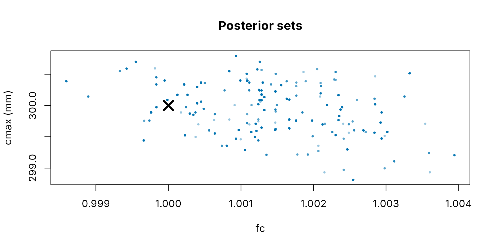
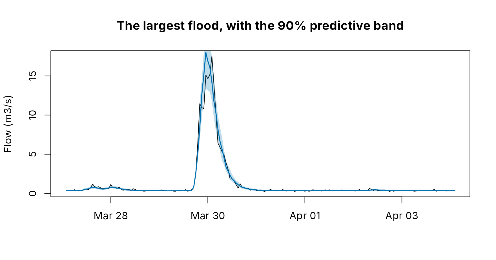

How sure are we? Bayesian calibration
pdmS7 documentation
Source:vignettes/bayesian-calibration.Rmd
bayesian-calibration.RmdAn ordinary calibration returns one set of parameters, the best it found. It says nothing about the other sets that fit nearly as well, or about how far the forecast might be from the truth because of them. Bayesian calibration returns all of them: a sample of every set consistent with the record and with what was known before, each in proportion to how well it fits. The spread of the sample is the uncertainty of the parameters; running its sets gives a band round the forecast.
The idea in three parts
-
The prior is what was known before looking at the
record: that
cmaxis likely to be around 250 mm, say, give or take 30%. It may come from experience, from a regional study, or from a model of parameters from catchment descriptors. - The likelihood is how probable the observed flows are if a given set is right. It needs a model of the errors.
- The posterior combines the two: sets that fit the record well and are plausible beforehand. Where the record pins a parameter down, the record wins; where it cannot, the prior keeps the parameter sensible instead of letting it drift to a bound.
The error model
The likelihood treats the errors on Box-Cox flows (Counting every error fairly) as running on
from one hour to the next: this hour’s error is a share rho
of the last hour’s plus a fresh error. Hourly errors do run on, because
a model that is too low at the start of a recession stays too low for
hours. Treating them as independent would count each hour as new
evidence and make the posterior far too sure of itself. rho
and the size of the fresh errors are set to their best values for each
set.
The sampler
The posterior cannot be written down; it is sampled.
calibrate_bayes() uses DREAM(ZS) (ter Braak and Vrugt,
2008; Vrugt, 2016). Several chains wander through the parameter space.
Each step proposes a jump built from the difference between two past
positions, kept in an archive, and accepts it more readily the better it
fits. Built that way, the jumps take the shape of the posterior itself,
which suits the long, curved ridges of hydrological models and needs no
tuning. The first half of every chain is discarded as burn-in.
An example
The synthetic catchment of the other articles, with a prior on
fc centred on the truth and a uniform prior, over its
bounds, on cmax:
rain <- synthetic_rain("2017-10-01", years = 3, dt = 1, seed = 5)
truth <- modifyList(pdm_presets("standard"), list(area_km2 = 25))
model <- pdm_from_config(truth)
forcing <- rain[c("time", "rain", "pet")]
set.seed(8)
flow <- run_pdm(model, forcing[c("rain", "pet")], initial_state(model, 0.5))$output$q_m3s
observed <- flow * exp(rnorm(length(flow), 0, 0.15))
post <- calibrate_bayes(truth, forcing, observed, lower = c(fc = 0.6, distribution.cmax = 100),
upper = c(fc = 1.4, distribution.cmax = 500),
priors = list(fc = prior_normal(1, 0.3)), generations = 800,
lambda = 0, warmup = 24 * 90, start = "soil", seed = 3)
post
#> Bayesian calibration: 3 chains x 800 generations, 2420 model runs, acceptance 12%; 1200 posterior sets
#> parameter mean sd q05 q50 q95 rhat
#> fc 1.001 0.0009737 0.9998 1.001 1.003 1.079
#> distribution.cmax 299.943 0.3949744 299.2891 299.974 300.515 1.007Each parameter has its mean, spread and 5%, 50% and 95% points.
rhat compares the chains: under about 1.2 for every
parameter they have found the same posterior; above it, run more
generations. The power of the Box-Cox transform is 0 here because these
errors are proportional to the flow.
The posterior is narrow: three years of hourly flow pin
fc down to within a fraction of a per cent. That is honest
about the parameters, given this model and this rain. It says nothing
about errors in the rain itself, which calibrating on the rainfall used
operationally deals with. Where the posterior is still too sure,
temper below 1 counts the record as worth less: 0.25 treats
it as a quarter of its length.
Seeing the posterior
The sample is a table of sets; its columns can be plotted like any data.
plot(post$samples$fc, post$samples$distribution.cmax, pch = 16, cex = 0.5,
col = grDevices::adjustcolor("#0072B2", 0.4), xlab = "fc", ylab = "cmax (mm)",
main = "Posterior sets")
points(1, 300, pch = 4, cex = 2, lwd = 3)
The cross is the truth. A tilted cloud would show the two parameters trading off against each other, a ridge of equally good sets; a round one, that the record determines each on its own.
A predictive band
posterior_band() runs sets drawn from the posterior.
Without the error model the band shows the parameters’ uncertainty
alone; with it, the band is where the observed flow should fall.
band <- posterior_band(post, forcing, draws = 50, noise = TRUE)
rows <- which.max(observed) + seq(-72, 120)
plot(forcing$time[rows], observed[rows], type = "l", xlab = "", ylab = "Flow (m3/s)",
main = "The largest flood, with the 90% predictive band")
polygon(c(forcing$time[rows], rev(forcing$time[rows])), c(band$q05[rows], rev(band$q95[rows])),
col = grDevices::adjustcolor("#0072B2", 0.25), border = NA)
lines(forcing$time[rows], band$q50[rows], col = "#0072B2", lwd = 1.5)
covered <- mean(observed >= band$q05 & observed <= band$q95, na.rm = TRUE)
cat(sprintf("Share of hours inside the 90%% band: %.0f%%\n", 100 * covered))
#> Share of hours inside the 90% band: 87%A 90% band should hold about 90% of the observations. Far fewer means the band is too narrow, the error model too optimistic; far more, too cautious. Is a probability forecast honest? checks this properly.
Priors from catchment descriptors
A model of parameters from catchment descriptors, trained on many
catchments, predicts each parameter of a new catchment with a spread.
priors_from_table() turns its predictions into priors:
predicted <- data.frame(parameter = c("distribution.cmax", "fc"),
median = c(280, NA), sdlog = c(0.25, NA),
mean = c(NA, 1.05), sd = c(NA, 0.1))
priors_from_table(predicted, widen = 1.5)
#> $distribution.cmax
#> $distribution.cmax$type
#> [1] "lognormal"
#>
#> $distribution.cmax$meanlog
#> [1] 5.63479
#>
#> $distribution.cmax$sdlog
#> [1] 0.375
#>
#>
#> $fc
#> $fc$type
#> [1] "normal"
#>
#> $fc$mean
#> [1] 1.05
#>
#> $fc$sd
#> [1] 0.15widen stretches every spread, to allow for the catchment
being one the model has not seen. With priors like these, a short record
calibrates far better than it could alone, and an ungauged catchment can
still be modelled, from the priors only.
Cautions
-
Check
rhatevery time. A run that has not converged gives a sample of the wrong thing. - The posterior is only as good as the error model. Choose the Box-Cox power so the errors are the same size at every flow, and check the band’s coverage.
- It costs thousands of runs: chains times generations. On long 15-minute records, a coarser step for a first look, or a shorter record, keeps it practical.